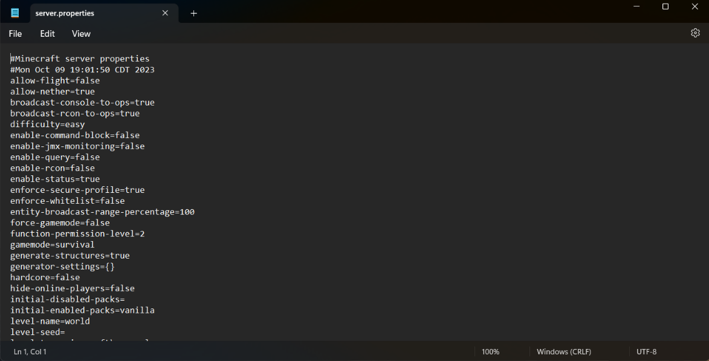

server.properties Settings
This table shows key parameters to optimize your server on a local computer:
| Parameter | Default Value | Recommended Value |
|---|---|---|
| max-tick-time | 60000 | -1 (Disables watchdog, prevents server crashes) |
| view-distance | 10 | 6-8 (Reduces CPU and RAM load) |
| online-mode | true | false (Allows non-premium accounts) |
| max-players | 20 | 5-10 (Best for home hosting) |
| server-port | 25565 | 25565 (Default port for Minecraft) |
| difficulty | easy | normal / hard (World challenge level) |
| gamemode | survival | survival (Standard gameplay mode) |
Network & Connection Info
To let other players join your local server:
- Host Player: Connect using
localhostor127.0.0.1 - Local Network: Friends in the same Wi-Fi connect using your IPv4 address
- Remote Friends: Use port forwarding on your router or tools like Radmin VPN / Playit.gg
